One metro stop west of Central, Hong Kong's bustling commercial hub, Shueng Wan is home to the city's highest concentration of Chinese herbal medicine shops. Clustered around Wing Lok Street and Queen's Road West, hundreds of traditional medicine shops sell imported remedies from the Chinese mainland.
Chan Fun Kee is one of the oldest shops in the area, and has been run by the Chan family for 145 years.
Chan Fun Kee is one of the oldest shops in the area, and has been run by the Chan family for 145 years.
EXPLORE THE SHOP
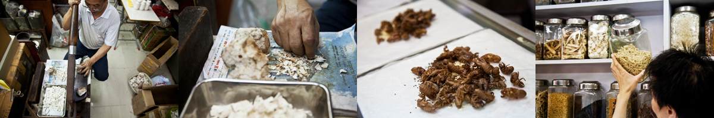

Ingredients are delivered from mainland China and processed in the back of the shop using a large cutter, topping up the contents of the jars when they get low

Chan Ping Hin, 33, will be the 5th generation of the Chan family to take over the shop. His father, Chan How Chung has been in charge since 1972. His mother also works in the shop assembling prescriptions
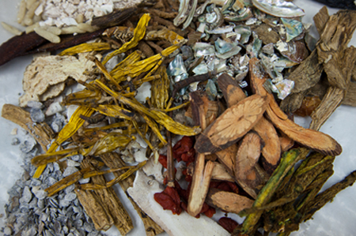

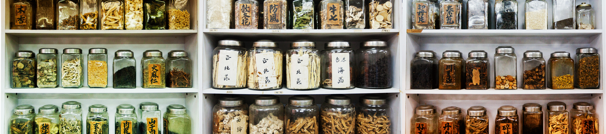

Nourishes the blood, calms the spirit
What's in the jars?
Chinese herbal medicine remains an important part of Hong Kong healthcare, still accounting for over a fifth of all consultations made in the state, from breastfeeding care to rheumatism and arthritis treatments.
Hong Kong's Chinese herb trade has existed for centuries, but accelerated dramatically in the 1950s when a trade embargo against China during the Korean war necessitated a neutral port for the movement of Chinese herbs across Asia. As much as a quarter of the global trade is estimated to move through the city.
Hong Kong's Chinese herb trade has existed for centuries, but accelerated dramatically in the 1950s when a trade embargo against China during the Korean war necessitated a neutral port for the movement of Chinese herbs across Asia. As much as a quarter of the global trade is estimated to move through the city.
The medical practice revolves around various "forces" contained within the body - the balance of yin (darkness and negativity), yang (lightness and positivity) and qi (the energy force guiding bodily functions). Chinese herbal doctors measure patients' pulses, and examines their eyes, ears and tongue, before prescribing a remedy formed of various ingredients. These are delivered to shop assistants upon arrival.
CLICK TO EXPLORE THE SHELVES
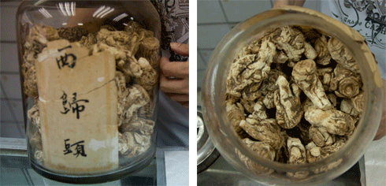
Internal heat regulator, to aid against fatigue and high body temperature
Seselopsis
"xi gui tou"
Internal heat regulator, to aid against fatigue and high body temperature
Chinese Jujube
"nan zao"
Nourishes the blood, calms the spirit
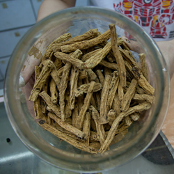
Improves the qi (body energy), tonifies the lungs
Codonopsis Root
"dang shen"
Improves the qi (body energy), tonifies the lungs
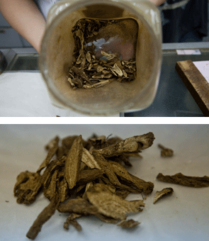
Promotes movement of 'qi' (body energy) to alleviate abdominal pain & nausea
Costus Root
"muxiang"
Promotes movement of 'qi' (body energy) to alleviate abdominal pain & nausea
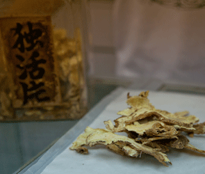
To relieve waist and knee pain caused by cold and windy weather
Pubescent Angelica Root
"duhuo pian"
To relieve waist and knee pain caused by cold and windy weather
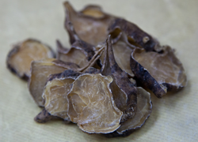
good for the heart and improves the circulation, tonifies the vessels
Aconite Root
"fu zi"
good for the heart and improves the circulation, tonifies the vessels
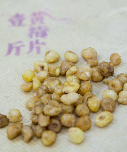
Either crushed or whole - for fighting coughs and tickly throats, and dispersing phlegm
Rhizoma Pinelliae
"ban xia"
Either crushed or whole - for fighting coughs and tickly throats, and dispersing phlegm
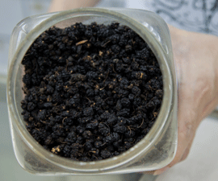
Used for anaemia, constipation, premature greying of hair
Mulberry
"sangshen zi"
Used for anaemia, constipation, premature greying of hair
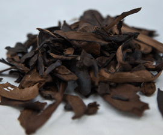
Used to strengthen bones and aid fracture recovery
Rhizoma
"suibu pian"
Used to strengthen bones and aid fracture recovery
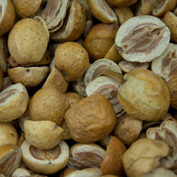
Dispels wind-damp and cramping in acutely cold/hot conditions
Gentiana Macrophylla
"qin jiao"
Dispels wind-damp and cramping in acutely cold/hot conditions
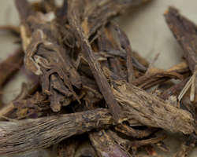
General painkiller and qi regulator
Sichuan Chinaberry
"chuan lianzi"
General painkiller and qi regulator
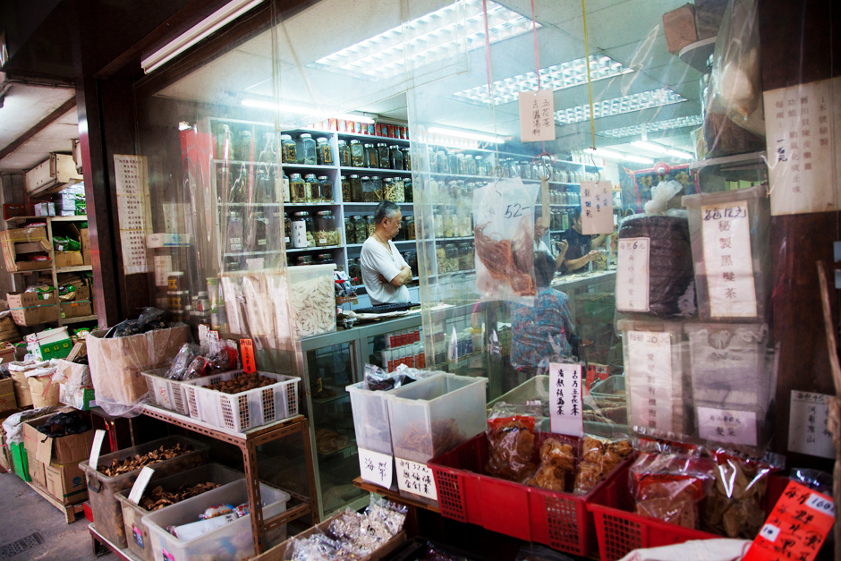
Keep exploring...